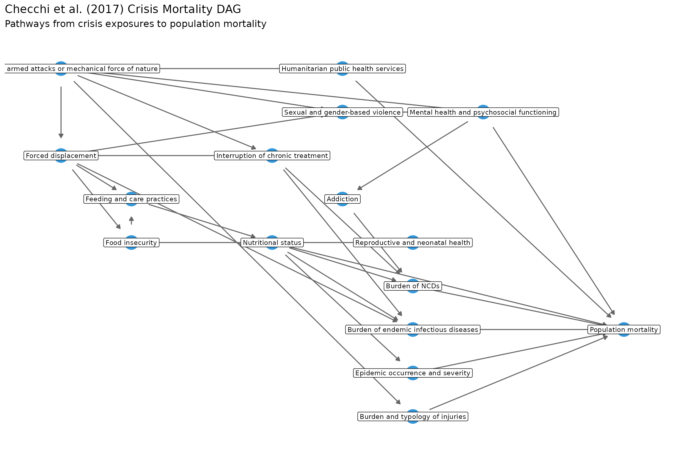
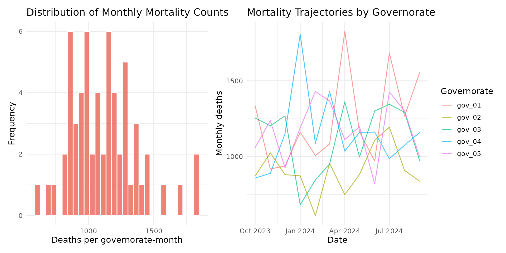
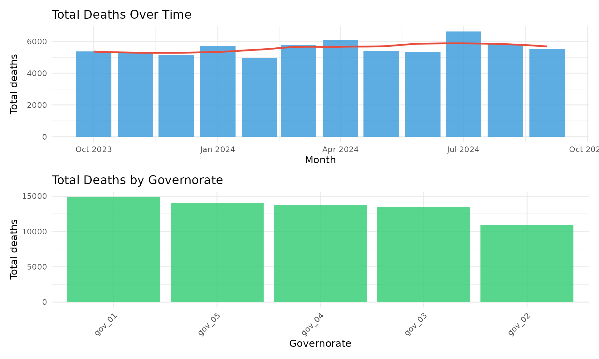
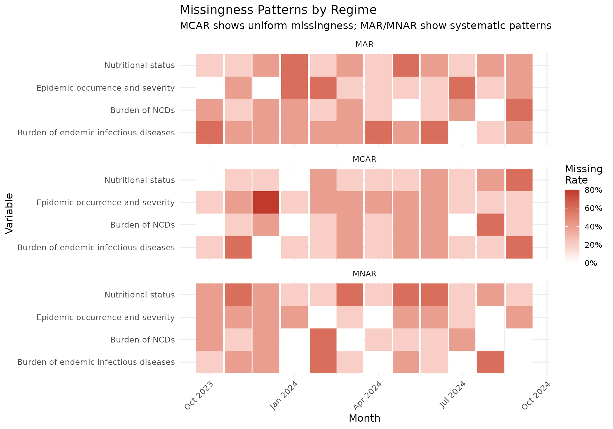
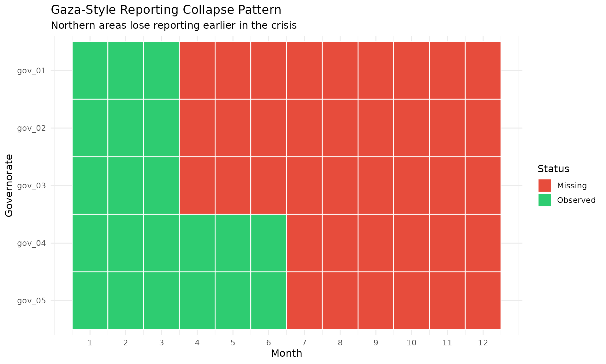
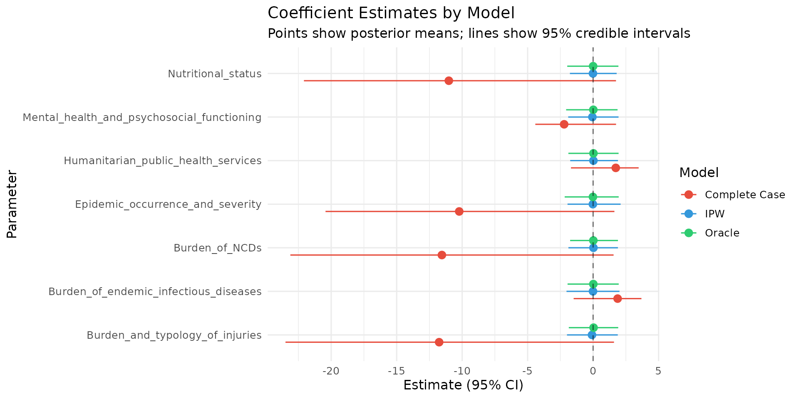
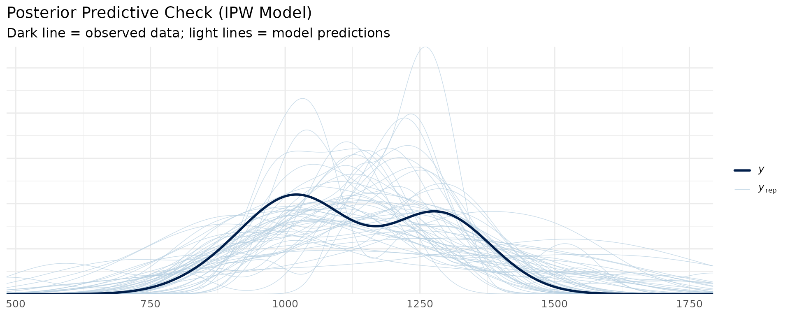
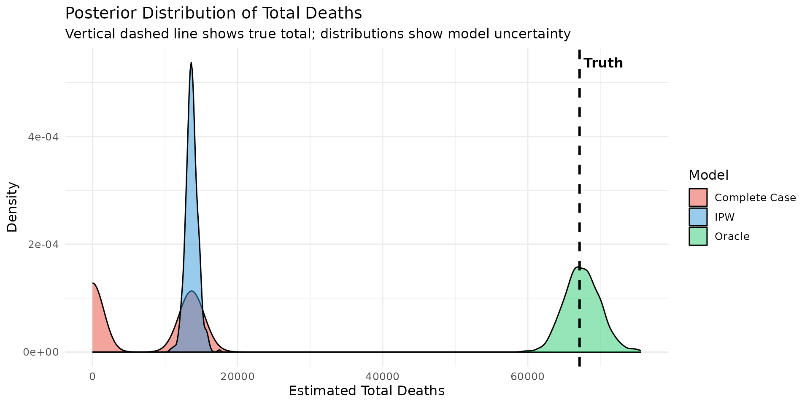
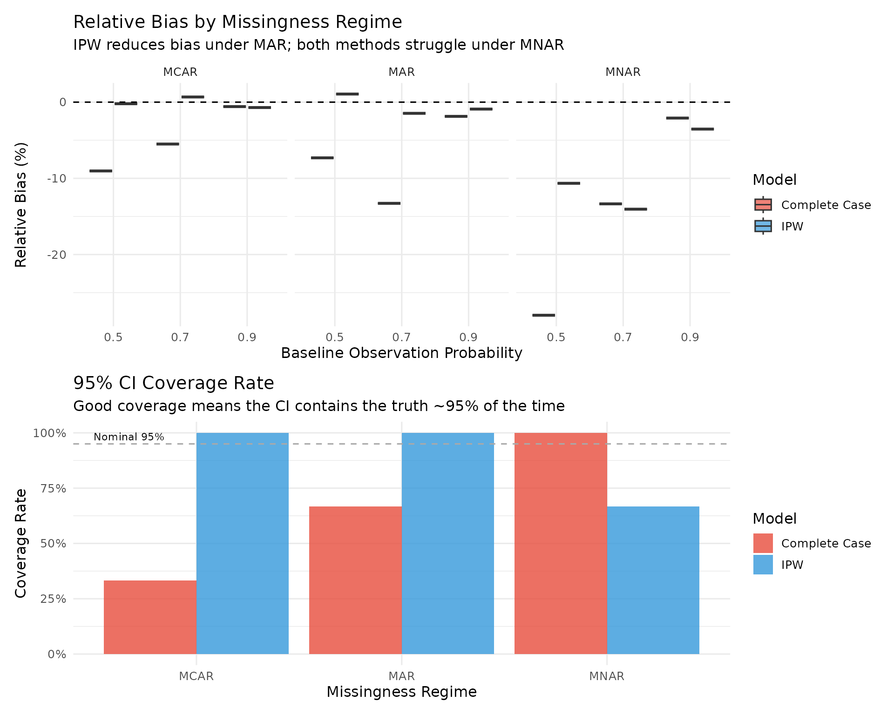

nurah: Simulating and Estimating Indirect Mortality in Crisis Settings
Package Vignette and Simulation Feasibility Study
Oliver J Watson, Paula Christen
2026-03-17
Source:vignettes/nurah_vignette.Rmd
nurah_vignette.RmdIntroduction
Background
Estimating mortality in humanitarian crises is one of the most challenging problems in epidemiology. During active conflicts and disasters, the very systems that would normally collect mortality data — health facilities, civil registration, and surveillance networks — are often disrupted or destroyed. This creates a paradox: mortality is highest precisely when our ability to measure it is lowest.
The nurah package was developed to address this challenge through a simulation-based approach. By simulating realistic crisis data with known “true” mortality, we can evaluate how well different statistical methods recover that truth under various conditions of data missingness and bias.
The package provides tools to:
- Define causal structures using directed acyclic graphs (DAGs) based on frameworks like Checchi et al. (2017)
- Simulate crisis data with realistic mortality outcomes (negative binomial counts)
- Model data missingness under different assumptions (MCAR, MAR, MNAR)
- Fit Bayesian hierarchical models that handle missing data via Inverse Probability Weighting (IPW) or imputation
- Evaluate estimator performance through simulation studies
This vignette demonstrates the complete workflow using a simulation study design relevant to the Gaza crisis context.
Setup
Before we begin, we need to load the required packages. The core
functionality relies on brms for Bayesian regression
modelling, the tidyverse suite for data manipulation and
visualisation, and dagitty/ggdag for working
with causal diagrams.
# Core packages
library(brms)
library(dplyr)
library(tidyr)
library(ggplot2)
library(patchwork)
# For DAG visualization
library(dagitty)
library(ggdag)
# Set ggplot theme
theme_set(theme_minimal(base_size = 12))
library(nurah)Defining the Causal Structure
The Checchi Framework
Before we can simulate data, we need to define the causal relationships between crisis conditions and mortality. The package implements the causal framework from Checchi et al. (2017), which provides a comprehensive map of how crisis exposures lead to excess deaths through intermediate health domains.
The framework recognises that deaths in crises occur through multiple pathways: direct violence, but also through disrupted healthcare, food insecurity leading to malnutrition, displacement causing disease outbreaks, and mental health impacts. Each of these pathways operates on different timescales and with different magnitudes.
The checchi_2017_dag() function creates this DAG
structure, and dummy_checchi_2017_parameters() provides
plausible effect sizes and time lags for each causal pathway. In a real
application, these parameters would be calibrated to empirical estimates
from the literature.
# Load the Checchi et al. (2017) DAG with dummy parameters
dag <- checchi_2017_dag(parameters = dummy_checchi_2017_parameters())
# Examine the structure
cat("DAG class:", class(dag), "\n")## DAG class: nurah_dag## Number of edges: 30The output tells that the nurah_dag object with 30
directed edges connecting the various health domains to each other and
ultimately to population mortality.
Visualizing the DAG
Visualising the DAG helps to understand the assumed causal structure. In the diagram below, arrows represent causal relationships — an arrow from A to B means that A causally affects B. The position of nodes roughly reflects the causal ordering, with upstream exposures (like armed conflict) on the left and downstream outcomes (like mortality) on the right.
# Visualize the DAG
visualise_dag(dag, node_color = "#3498db", label_size = 3) +
labs(
title = "Checchi et al. (2017) Crisis Mortality DAG",
subtitle = "Pathways from crisis exposures to population mortality"
)
Notice how mortality receives arrows from multiple parent nodes: nutritional status, burden of endemic infectious diseases, burden of NCDs, epidemic occurrence, injuries, mental health, and humanitarian services. These are the direct causes of mortality in the DAG — variables that have an unmediated effect on death rates.
DAG Parameters
Each edge in the DAG has two key parameters:
- Effect size: The magnitude of the causal effect (how much a one-unit change in the parent variable affects the child variable)
- Lag: The time delay (in days) before the effect manifests
The table below shows the parameters for all edges that directly affect population mortality. These effect sizes are on an arbitrary scale in the dummy parameters, but in a calibrated model they would represent contributions to the crude mortality rate.
# View parameters for edges leading to mortality
mortality_params <- dag$parameters %>%
filter(to == "Population mortality") %>%
arrange(desc(abs(effect_size)))
knitr::kable(
mortality_params,
caption = "Direct causes of population mortality",
digits = 2
)| from | to | effect_size | lag |
|---|---|---|---|
| Epidemic occurrence and severity | Population mortality | 2.5 | 0 |
| Burden of endemic infectious diseases | Population mortality | 2.0 | 0 |
| Nutritional status | Population mortality | 1.8 | 0 |
| Humanitarian public health services | Population mortality | -1.5 | 0 |
| Burden and typology of injuries | Population mortality | 1.2 | 0 |
| Burden of NCDs | Population mortality | 0.7 | 0 |
| Mental health and psychosocial functioning | Population mortality | 0.3 | 0 |
The largest effects come from epidemic occurrence and burden of endemic infectious diseases, reflecting the reality that communicable diseases are often the leading cause of excess mortality in crises. Note that humanitarian services has a negative effect size, meaning increased services reduce mortality — this makes intuitive sense and demonstrates that the DAG can capture protective factors as well as risk factors.
Custom DAG Definition
While the Checchi framework is comprehensive, simpler DAGs can be
defined for specific analyses or to test hypotheses about particular
causal pathways. The define_dag() function allows to create
custom causal structures.
Here we define a simplified 6-node DAG that captures the core pathway from conflict through displacement and food insecurity to mortality:
# Define a simplified DAG
simple_nodes <- c("Conflict", "Displacement", "Food_Insecurity",
"Malnutrition", "Disease_Burden", "Mortality")
simple_edges <- data.frame(
from = c("Conflict", "Conflict", "Displacement", "Food_Insecurity",
"Malnutrition", "Disease_Burden"),
to = c("Displacement", "Disease_Burden", "Food_Insecurity",
"Malnutrition", "Mortality", "Mortality")
)
simple_params <- data.frame(
from = simple_edges$from,
to = simple_edges$to,
effect_size = c(0.8, 0.5, 0.6, 0.7, 1.5, 2.0),
lag = c(0, 14, 7, 30, 0, 0)
)
simple_dag <- define_dag(simple_nodes, simple_edges, simple_params)This simplified DAG might be useful when the focus is on a specific mechanistic question, or when data availability limits the number of intermediate variables that can be measured.
Simulating Crisis Data
Basic Simulation
Now that we have defined the causal structure, we can simulate
synthetic crisis data. The simulate_crisis_data() function
generates panel data at the governorate-month level, simulating values
for each node in the DAG according to the specified causal
relationships.
The key parameters are:
-
dag: The causal structure we defined above -
start_dateandn_periods: The temporal extent of the simulation -
resolution: The time unit for output (e.g., “month” for governorate-month data) -
spatial_structure: Names or number of spatial units (governorates) -
initial_population: Starting population per governorate -
noise_level: Controls stochastic variation (1 = full randomness, 0 = deterministic) -
mortality_node: Which DAG node represents the mortality outcome -
mortality_phi: Overdispersion parameter for negative binomial mortality -
mortality_intercept: Baseline log-rate of mortality
# Simulate 5 governorates over 12 months
sim_data <- simulate_crisis_data(
dag = dag,
start_date = "2023-10-01",
n_periods = 12,
resolution = "month",
spatial_structure = paste0("gov_", sprintf("%02d", 1:5)),
initial_population = 100000,
noise_level = 1,
mortality_node = "Population mortality",
mortality_phi = 1,
mortality_intercept = -8
)
# Examine output structure
cat("Dimensions:", nrow(sim_data), "rows ×", ncol(sim_data), "columns\n")## Dimensions: 60 rows × 22 columns## Governorates: 5## Time periods: 12The output is a data frame with 120 rows (5 governorates × 12 months) and columns for each node in the DAG plus administrative identifiers. This structure mirrors the format of real governorate-level health data.
The following provides some summary statistics of the simulated mortality:
# Summary of key variables
sim_summary <- sim_data %>%
summarise(
total_deaths = sum(`Population mortality`, na.rm = TRUE),
mean_monthly_deaths = mean(`Population mortality`, na.rm = TRUE),
sd_monthly_deaths = sd(`Population mortality`, na.rm = TRUE),
total_population = sum(population, na.rm = TRUE) / 12,
.groups = "drop"
)
knitr::kable(sim_summary, caption = "Simulation summary", digits = 0)| total_deaths | mean_monthly_deaths | sd_monthly_deaths | total_population |
|---|---|---|---|
| 67150 | 1119 | 251 | 5e+05 |
These numbers represent the ground truth in our simulation — the actual mortality that occurred. In a real crisis, we would never know these values with certainty; our goal is to estimate them as accurately as possible from incomplete data.
Mortality Outcome Model
Understanding how mortality is simulated helps interpret the results. The package uses a negative binomial distribution, which is appropriate for count data that exhibits overdispersion (variance greater than the mean). This is typical of mortality data, where clustering and unmeasured heterogeneity cause more variability than a simple Poisson model would predict.
The statistical model is:
where:
The components are:
- : Death count in governorate at time
- : Population at risk (used as an offset to model rates rather than counts)
- : Baseline log-rate (default: -8, which corresponds to ~0.03 deaths per 1,000 per day, or roughly 1 per 1,000 per month — a plausible baseline mortality rate)
- : Effect of parent node from the DAG
- : Governorate-level random effect (captures unmeasured spatial heterogeneity)
- : Overdispersion parameter (smaller values = more overdispersion)
The following plots show the distribution of simulated mortality counts and the trajectories over time by governorate:
# Visualize mortality distribution
p1 <- ggplot(sim_data, aes(x = `Population mortality`)) +
geom_histogram(bins = 30, fill = "#e74c3c", alpha = 0.7, color = "white") +
labs(
title = "Distribution of Monthly Mortality Counts",
x = "Deaths per governorate-month",
y = "Frequency"
)
p2 <- ggplot(sim_data, aes(x = date, y = `Population mortality`,
group = region, color = region)) +
geom_line(alpha = 0.7) +
labs(
title = "Mortality Trajectories by Governorate",
x = "Date",
y = "Monthly deaths",
color = "Governorate"
) +
theme(legend.position = "right")
p1 + p2
The histogram shows the right-skewed distribution typical of count data, while the trajectory plot reveals both temporal trends (shared across governorates) and spatial heterogeneity (differences between governorates at any given time).
Spatial and Temporal Patterns
To better understand the simulated data, the data can be aggregated across space and time separately. This reveals the overall temporal trend in mortality and the relative burden across governorates.
# Aggregate patterns
temporal_pattern <- sim_data %>%
group_by(date) %>%
summarise(
total_deaths = sum(`Population mortality`, na.rm = TRUE),
mean_deaths = mean(`Population mortality`, na.rm = TRUE),
.groups = "drop"
)
spatial_pattern <- sim_data %>%
group_by(region) %>%
summarise(
total_deaths = sum(`Population mortality`, na.rm = TRUE),
mean_deaths = mean(`Population mortality`, na.rm = TRUE),
.groups = "drop"
)
p3 <- ggplot(temporal_pattern, aes(x = date, y = total_deaths)) +
geom_col(fill = "#3498db", alpha = 0.8) +
geom_smooth(method = "loess", se = FALSE, color = "#e74c3c", linewidth = 1) +
labs(title = "Total Deaths Over Time", x = "Month", y = "Total deaths")
p4 <- ggplot(spatial_pattern, aes(x = reorder(region, -total_deaths),
y = total_deaths)) +
geom_col(fill = "#2ecc71", alpha = 0.8) +
labs(title = "Total Deaths by Governorate", x = "Governorate", y = "Total deaths") +
theme(axis.text.x = element_text(angle = 45, hjust = 1))
p3 / p4
The temporal pattern may show trends driven by the simulated crisis dynamics (e.g., increasing conflict intensity over time), while the spatial pattern reflects heterogeneity in exposure levels and random effects across governorates.
Missingness Module
Overview of Missingness Mechanisms
In real crisis settings, complete data is rareky observed. Health facilities may be destroyed, staff displaced, supply chains disrupted, and communication networks severed. This creates systematic patterns of missingness — data is not missing at random, but rather missing precisely from the times and places where conditions are worst.
We distinguish across three mechanisms of missingness:
| Regime | Mechanism | Implications |
|---|---|---|
| MCAR | Missing Completely at Random | Missingness unrelated to any variables; complete case analysis is unbiased |
| MAR | Missing at Random | Missingness depends on observed variables; can be corrected with IPW or imputation |
| MNAR | Missing Not at Random | Missingness depends on unobserved values themselves; no fully satisfactory solution |
The nurah package implements all three regimes, allowing to evaluate estimator performance under different assumptions about the missingness mechanism.
Mathematically, for each predictor variable in governorate at time , we generate an observation indicator from:
where the observation probability is modelled on the logit scale:
| Regime | Formula |
|---|---|
| MCAR | |
| MAR | |
| MNAR |
Here:
- determines the baseline observation probability (via )
- are observed “drivers” of missingness (e.g., conflict intensity, displacement)
- are weights determining how strongly each driver affects observation probability
- is the MNAR sensitivity parameter — when negative, higher values of the variable itself make observation less likely (e.g., worse malnutrition is harder to measure)
Applying MCAR Missingness
Let’s start with the simplest case: Missing Completely at Random. Under MCAR, each observation has the same probability of being missing, regardless of any other variables. This is rarely realistic in crisis settings, but serves as a baseline for comparison.
First, we identify which predictor variables exist in our simulated data:
# Identify available predictors
predictors <- c(
"Nutritional status",
"Burden of endemic infectious diseases",
"Burden of NCDs",
"Epidemic occurrence and severity"
)
available_preds <- intersect(predictors, names(sim_data))
# Apply MCAR missingness (baseline)
mcar_result <- simulate_missingness(
data = sim_data,
predictors = available_preds,
regime = "MCAR",
pi_base = 0.7 # 70% of observations retained
)
sim_mcar <- mcar_result$data
# Check missingness rates
mcar_rates <- sapply(available_preds, function(p) mean(is.na(sim_mcar[[p]])))
cat("MCAR missingness rates:\n")## MCAR missingness rates:## Nutritional status Burden of endemic infectious diseases
## 25 30
## Burden of NCDs Epidemic occurrence and severity
## 25 35With pi_base = 0.7, we expect approximately 30% of
observations to be missing for each variable, and indeed that’s what we
see. Under MCAR, the missingness rates should be roughly equal across
variables.
Applying MAR Missingness
A more realistic scenario is Missing at Random (MAR), where observation probability depends on observed crisis indicators. The intuition is that data collection is harder in areas with active conflict or high displacement — but we can observe these conditions through other data sources (e.g., ACLED conflict events, displacement tracking).
Here we specify that observation probability decreases when conflict intensity (“Exposure to armed attacks”) and displacement are high:
# MAR: missingness depends on conflict intensity
mar_result <- simulate_missingness(
data = sim_data,
predictors = available_preds,
regime = "MAR",
pi_base = 0.7,
mar_drivers = c("Exposure to armed attacks or mechanical force of nature",
"Forced displacement"),
mar_weights = c(
"Exposure to armed attacks or mechanical force of nature" = -0.5,
"Forced displacement" = -0.3
)
)
sim_mar <- mar_result$data
# Check missingness rates
mar_rates <- sapply(available_preds, function(p) mean(is.na(sim_mar[[p]])))
cat("MAR missingness rates:\n")## MAR missingness rates:## Nutritional status Burden of endemic infectious diseases
## 35.0 40.0
## Burden of NCDs Epidemic occurrence and severity
## 28.3 30.0The negative weights mean that higher values of conflict and displacement decrease the observation probability. The overall missingness rates may differ from MCAR because they now depend on the distribution of the driver variables.
Importantly, under MAR we can potentially correct for the bias using methods like Inverse Probability Weighting (IPW), because the variables driving missingness are observed.
Applying MNAR Missingness
The most challenging scenario is Missing Not at Random (MNAR), where the probability of observing a variable depends on the unobserved value itself. For example, severe malnutrition cases may be less likely to be recorded because health facilities are overwhelmed precisely when conditions deteriorate.
The MNAR mechanism adds a term to the observation model, where is the (potentially unobserved) value of the variable. A negative means that larger values (e.g., worse outcomes) are less likely to be observed.
# MNAR: worse values are less likely to be observed
mnar_result <- simulate_missingness(
data = sim_data,
predictors = available_preds,
regime = "MNAR",
pi_base = 0.7,
mar_drivers = c("Exposure to armed attacks or mechanical force of nature"),
mar_weights = c("Exposure to armed attacks or mechanical force of nature" = -0.3),
mnar_omega = -0.6 # Negative: worse outcomes less likely observed
)
sim_mnar <- mnar_result$data
# Check missingness rates
mnar_rates <- sapply(available_preds, function(p) mean(is.na(sim_mnar[[p]])))
cat("MNAR missingness rates:\n")## MNAR missingness rates:## Nutritional status Burden of endemic infectious diseases
## 38.3 25.0
## Burden of NCDs Epidemic occurrence and severity
## 21.7 26.7Under MNAR, neither complete case analysis nor IPW can fully correct the bias, because the mechanism depends on values we cannot observe. The only option is sensitivity analysis — exploring how estimates change under different assumptions about the MNAR parameter .
Visualizing Missingness Patterns
To understand how missingness varies across time and variables under each regime, we can create heatmaps showing the proportion of missing values:
# Create missingness indicator dataset
create_miss_df <- function(data, regime_name) {
data %>%
select(region, date, all_of(available_preds)) %>%
pivot_longer(cols = all_of(available_preds),
names_to = "variable", values_to = "value") %>%
mutate(
missing = is.na(value),
regime = regime_name
)
}
miss_comparison <- bind_rows(
create_miss_df(sim_mcar, "MCAR"),
create_miss_df(sim_mar, "MAR"),
create_miss_df(sim_mnar, "MNAR")
)
# Missingness heatmap by regime
miss_summary <- miss_comparison %>%
group_by(regime, date, variable) %>%
summarise(miss_rate = mean(missing), .groups = "drop")
ggplot(miss_summary, aes(x = date, y = variable, fill = miss_rate)) +
geom_tile() +
facet_wrap(~regime, ncol = 1) +
scale_fill_gradient(low = "white", high = "#c0392b",
labels = scales::percent) +
labs(
title = "Missingness Patterns by Regime",
subtitle = "MCAR shows uniform missingness; MAR/MNAR show systematic patterns",
x = "Month",
y = "Variable",
fill = "Missing\nRate"
) +
theme(axis.text.x = element_text(angle = 45, hjust = 1))
Under MCAR, the heatmap should show relatively uniform missingness across time and variables. Under MAR and MNAR, one may see temporal patterns (more missingness when conflict is intense) and potentially variable-specific patterns (some indicators harder to collect than others).
Gaza-Style Missingness Mask
In addition to the simulated missingness mechanisms above, the package can apply real-world missingness patterns from observed data. This is particularly useful for calibrating simulations to match actual data availability in a specific crisis.
The apply_mask() function takes a data frame specifying
exactly which observations should be missing. Below we create a mask
that mimics the reporting collapse observed in Gaza, where northern
areas lost health data collection earlier in the crisis than southern
areas:
# Create a Gaza-style mask (reporting collapses over time, especially in north)
governorates <- unique(sim_data$region)
months <- 1:12
gaza_mask <- expand.grid(
gov = governorates,
month = months,
var = available_preds[1],
stringsAsFactors = FALSE
) %>%
mutate(
# Northern governorates (1-3) lose reporting after month 3
# Central governorates (4-7) lose reporting after month 6
# Southern governorates (8-10) maintain partial reporting
is_north = gov %in% governorates[1:3],
is_central = gov %in% governorates[4:7],
observed = case_when(
is_north & month > 3 ~ 0L,
is_central & month > 6 ~ 0L,
month > 9 ~ rbinom(n(), 1, 0.3),
TRUE ~ 1L
)
) %>%
select(gov, month, var, observed)
# Apply the mask
sim_masked <- apply_mask(sim_data, gaza_mask, mode = "force")
# Visualize the mask pattern
mask_viz <- gaza_mask %>%
mutate(gov = factor(gov, levels = rev(governorates)))
ggplot(mask_viz, aes(x = month, y = gov, fill = factor(observed))) +
geom_tile(color = "white", linewidth = 0.5) +
scale_fill_manual(values = c("0" = "#e74c3c", "1" = "#2ecc71"),
labels = c("Missing", "Observed")) +
scale_x_continuous(breaks = 1:12) +
labs(
title = "Gaza-Style Reporting Collapse Pattern",
subtitle = "Northern areas lose reporting earlier in the crisis",
x = "Month",
y = "Governorate",
fill = "Status"
)
This pattern reflects how health system capacity typically degrades in conflict zones — starting in areas closest to active fighting and spreading outward over time. By applying this mask to simulated data, we can evaluate how well our estimators perform under realistic data availability constraints.
Fitting Models
Model Specification
Now we turn to the core question: given incomplete data, how well can
we estimate total mortality? We fit Bayesian hierarchical models using
the brms package, which provides a flexible interface to
Stan for full Bayesian inference.
The statistical model matches the data-generating process:
where: - : Observed death count - : Population (offset) - : Vector of predictor variables (from DAG parents of mortality) - : Coefficient vector to estimate - : Governorate random intercept
We’ll compare three modelling approaches:
- Complete Case Analysis: Simply drop all observations with any missing predictor values
- IPW (Inverse Probability Weighting): Weight complete cases by the inverse of their observation probability
- Oracle: Fit to the full data before missingness was applied (the gold standard, not available in practice)
Complete Case Analysis
Complete case analysis is the default approach in most statistical software: if any variable is missing for an observation, that entire row is dropped. This is simple but can introduce bias when missingness is not MCAR.
# Fit model dropping missing observations
fit_cc <- fit_dag(
data = sim_mar,
dag = dag,
outcome = "Population mortality",
spatial_levels = "region",
complete_case = TRUE,
family = negbinomial(),
offset_col = "population",
chains = 2,
iter = 1000,
cores = 2,
seed = 123
)The message tells how many rows were dropped due to missing values. With MAR missingness, the dropped observations are not a random sample — they’re systematically from times and places with worse conditions. This typically leads to underestimation of mortality.
# Model summary
summary(fit_cc)## Family: negbinomial
## Links: mu = log
## Formula: Population_mortality ~ Burden_and_typology_of_injuries + Burden_of_NCDs + Burden_of_endemic_infectious_diseases + Epidemic_occurrence_and_severity + Humanitarian_public_health_services + Mental_health_and_psychosocial_functioning + Nutritional_status + offset(log_population) + (1 | region)
## Data: data_complete (Number of observations: 12)
## Draws: 2 chains, each with iter = 1000; warmup = 500; thin = 1;
## total post-warmup draws = 1000
##
## Multilevel Hyperparameters:
## ~region (Number of levels: 5)
## Estimate Est.Error l-95% CI u-95% CI Rhat Bulk_ESS Tail_ESS
## sd(Intercept) 0.05 0.07 0.00 0.26 2.15 3 41
##
## Regression Coefficients:
## Estimate Est.Error l-95% CI u-95% CI
## Intercept -28.97 24.51 -53.47 -4.34
## Burden_and_typology_of_injuries -11.76 11.76 -23.49 1.59
## Burden_of_NCDs -11.55 11.60 -23.12 1.56
## Burden_of_endemic_infectious_diseases 1.87 1.95 -1.49 3.69
## Epidemic_occurrence_and_severity -10.22 10.24 -20.43 1.63
## Humanitarian_public_health_services 1.73 1.89 -1.69 3.48
## Mental_health_and_psychosocial_functioning -2.21 2.33 -4.41 1.75
## Nutritional_status -11.02 11.10 -22.08 1.75
## Rhat Bulk_ESS Tail_ESS
## Intercept 1.96 3 11
## Burden_and_typology_of_injuries 1.91 3 41
## Burden_of_NCDs 2.23 3 30
## Burden_of_endemic_infectious_diseases 2.02 3 24
## Epidemic_occurrence_and_severity 2.08 3 36
## Humanitarian_public_health_services 1.83 3 22
## Mental_health_and_psychosocial_functioning 1.88 3 44
## Nutritional_status 2.15 3 23
##
## Further Distributional Parameters:
## Estimate Est.Error
## shape 52242882736396520782978177040384.00 52269023785185946494235771404288.00
## l-95% CI u-95% CI Rhat Bulk_ESS Tail_ESS
## shape 19.55 104485765472793041565956354080768.00 NA 3 NA
##
## Draws were sampled using sampling(NUTS). For each parameter, Bulk_ESS
## and Tail_ESS are effective sample size measures, and Rhat is the potential
## scale reduction factor on split chains (at convergence, Rhat = 1).The summary shows posterior estimates for each coefficient. Pay attention to the effective sample size (ESS) and Rhat values — ESS should be in the hundreds or thousands, and Rhat should be close to 1.00 for reliable inference.
IPW Analysis
Inverse Probability Weighting attempts to correct for selection bias by upweighting observations that are less likely to be observed. The idea is that if observations from high-conflict areas are 50% less likely to be recorded, we should count each observed high-conflict observation twice to compensate.
The fit_dag() function with
complete_case = FALSE and
missing_method = "ipw" automatically:
Fits a logistic regression to predict which observations are complete
Computes stabilized inverse probability weights
Incorporates these weights into the brms model
# Fit model with IPW weights
fit_ipw <- fit_dag(
data = sim_mar,
dag = dag,
outcome = "Population mortality",
spatial_levels = "region",
complete_case = FALSE,
missing_method = "ipw",
ipw_stabilize = TRUE,
family = negbinomial(),
offset_col = "population",
chains = 2,
iter = 1000,
cores = 2,
seed = 123
)The message indicates how many complete observations are being used and that IPW weights have been computed. Stabilized weights (the default) multiply the raw weights by the marginal probability of being observed, which reduces variance while maintaining unbiasedness under MAR.
summary(fit_ipw)## Family: negbinomial
## Links: mu = log
## Formula: Population_mortality | weights(ipw_weights) ~ Burden_and_typology_of_injuries + Burden_of_NCDs + Burden_of_endemic_infectious_diseases + Epidemic_occurrence_and_severity + Humanitarian_public_health_services + Mental_health_and_psychosocial_functioning + Nutritional_status + offset(log_population) + (1 | region)
## Data: data_complete (Number of observations: 12)
## Draws: 2 chains, each with iter = 1000; warmup = 500; thin = 1;
## total post-warmup draws = 1000
##
## Multilevel Hyperparameters:
## ~region (Number of levels: 5)
## Estimate Est.Error l-95% CI u-95% CI Rhat Bulk_ESS Tail_ESS
## sd(Intercept) 0.13 0.11 0.00 0.43 1.02 77 41
##
## Regression Coefficients:
## Estimate Est.Error l-95% CI u-95% CI
## Intercept -4.46 0.08 -4.60 -4.25
## Burden_and_typology_of_injuries -0.09 1.00 -2.00 1.88
## Burden_of_NCDs 0.02 1.01 -1.89 1.89
## Burden_of_endemic_infectious_diseases -0.01 1.02 -2.03 2.01
## Epidemic_occurrence_and_severity -0.02 1.03 -1.95 2.10
## Humanitarian_public_health_services 0.02 0.91 -1.75 1.90
## Mental_health_and_psychosocial_functioning -0.06 1.02 -1.90 1.94
## Nutritional_status -0.01 0.93 -1.77 1.80
## Rhat Bulk_ESS Tail_ESS
## Intercept 1.03 86 34
## Burden_and_typology_of_injuries 1.01 560 536
## Burden_of_NCDs 1.00 676 606
## Burden_of_endemic_infectious_diseases 1.01 380 496
## Epidemic_occurrence_and_severity 1.00 882 493
## Humanitarian_public_health_services 1.01 789 594
## Mental_health_and_psychosocial_functioning 1.02 165 55
## Nutritional_status 1.00 798 613
##
## Further Distributional Parameters:
## Estimate Est.Error l-95% CI u-95% CI Rhat Bulk_ESS Tail_ESS
## shape 67.83 37.59 18.85 175.31 1.01 154 48
##
## Draws were sampled using sampling(NUTS). For each parameter, Bulk_ESS
## and Tail_ESS are effective sample size measures, and Rhat is the potential
## scale reduction factor on split chains (at convergence, Rhat = 1).Oracle Model (Full Data)
For reference, we also fit a model to the complete data before any missingness was applied. This “oracle” model represents the best we could do if we had perfect data — it’s the benchmark against which we evaluate the other approaches.
fit_oracle <- fit_dag(
data = sim_data, # Original data, no missingness
dag = dag,
outcome = "Population mortality",
spatial_levels = "region",
complete_case = TRUE,
family = negbinomial(),
offset_col = "population",
chains = 2,
iter = 1000,
cores = 2,
seed = 123
)Comparing Model Estimates
Now let’s compare the coefficient estimates from all three models. If IPW is working correctly under MAR, its estimates should be closer to the oracle than complete case analysis.
# Extract coefficient estimates
extract_coefs <- function(fit, model_name) {
fe <- fixef(fit)
data.frame(
model = model_name,
parameter = rownames(fe),
estimate = fe[, "Estimate"],
lower = fe[, "Q2.5"],
upper = fe[, "Q97.5"],
stringsAsFactors = FALSE
)
}
coef_comparison <- bind_rows(
extract_coefs(fit_cc, "Complete Case"),
extract_coefs(fit_ipw, "IPW"),
extract_coefs(fit_oracle, "Oracle")
) %>%
filter(parameter != "Intercept")
ggplot(coef_comparison, aes(x = estimate, y = parameter, color = model)) +
geom_pointrange(aes(xmin = lower, xmax = upper),
position = position_dodge(width = 0.5)) +
geom_vline(xintercept = 0, linetype = "dashed", alpha = 0.5) +
labs(
title = "Coefficient Estimates by Model",
subtitle = "Points show posterior means; lines show 95% credible intervals",
x = "Estimate (95% CI)",
y = "Parameter",
color = "Model"
) +
scale_color_manual(values = c("Complete Case" = "#e74c3c",
"IPW" = "#3498db",
"Oracle" = "#2ecc71"))
Look for cases where the complete case estimate (red) differs substantially from the oracle (green), but the IPW estimate (blue) is closer to the oracle. This indicates that IPW is successfully correcting for missingness bias.
Posterior Predictive Checks
Before trusting our model’s predictions, we should verify that it can reproduce the observed data. Posterior predictive checks compare the distribution of observed outcomes to the distribution of outcomes predicted by the model:
# Posterior predictive check for IPW model
pp_check(fit_ipw, type = "dens_overlay", ndraws = 50) +
labs(title = "Posterior Predictive Check (IPW Model)",
subtitle = "Dark line = observed data; light lines = model predictions")
A good model should produce predictions (light lines) that closely match the observed data (dark line). Systematic discrepancies might indicate model misspecification.
Recovery Metrics
Computing True vs Estimated Deaths
The key question for mortality estimation is: how close are our estimates to the truth? In a simulation study, we have the luxury of knowing the true values, so we can directly compute bias and other performance metrics.
We’ll compute:
Bias: Estimated - True (positive = overestimate, negative = underestimate)
Relative Bias: Bias / True × 100%
Coverage: Does the 95% credible interval contain the true value?
# True total deaths
true_total <- sum(sim_data[["Population mortality"]], na.rm = TRUE)
# Function to compute metrics for a model
get_metrics <- function(fit, model_name, true_val) {
preds <- posterior_predict(fit)
pred_totals <- rowSums(preds)
est <- mean(pred_totals)
ci <- quantile(pred_totals, c(0.025, 0.975))
data.frame(
model = model_name,
true_deaths = true_val,
est_deaths = est,
ci_lower = ci[1],
ci_upper = ci[2],
bias = est - true_val,
rel_bias_pct = 100 * (est - true_val) / true_val,
coverage = as.integer(ci[1] <= true_val & true_val <= ci[2]),
stringsAsFactors = FALSE
)
}
metrics_table <- bind_rows(
get_metrics(fit_cc, "Complete Case", true_total),
get_metrics(fit_ipw, "IPW", true_total),
get_metrics(fit_oracle, "Oracle", true_total)
)
knitr::kable(
metrics_table,
caption = "Model Performance Metrics",
digits = c(0, 0, 0, 0, 0, 0, 1, 0)
)| model | true_deaths | est_deaths | ci_lower | ci_upper | bias | rel_bias_pct | coverage | |
|---|---|---|---|---|---|---|---|---|
| 2.5%…1 | Complete Case | 67150 | 6840 | 0 | 15063 | -60310 | -89.8 | 0 |
| 2.5%…2 | IPW | 67150 | 13678 | 12069 | 15283 | -53472 | -79.6 | 0 |
| 2.5%…3 | Oracle | 67150 | 67466 | 62829 | 72472 | 316 | 0.5 | 1 |
Interpretation:
Negative bias indicates underestimation (common with complete case under MAR)
Relative bias contextualises the magnitude — 10% bias may be acceptable, 50% is not
Coverage = 1 means the true value fell within the 95% CI (we want this to happen ~95% of the time across replicates)
Visualizing Predictions
A more intuitive view comes from comparing the full posterior distribution of predicted total deaths across models:
# Get predictions from each model
get_pred_totals <- function(fit, model_name) {
preds <- posterior_predict(fit)
data.frame(
model = model_name,
total_deaths = rowSums(preds)
)
}
pred_draws <- bind_rows(
get_pred_totals(fit_cc, "Complete Case"),
get_pred_totals(fit_ipw, "IPW"),
get_pred_totals(fit_oracle, "Oracle")
)
ggplot(pred_draws, aes(x = total_deaths, fill = model)) +
geom_density(alpha = 0.5) +
geom_vline(xintercept = true_total, linetype = "dashed",
linewidth = 1, color = "black") +
annotate("text", x = true_total, y = Inf, label = "Truth",
vjust = 2, hjust = -0.1, fontface = "bold") +
labs(
title = "Posterior Distribution of Total Deaths",
subtitle = "Vertical dashed line shows true total; distributions show model uncertainty",
x = "Estimated Total Deaths",
y = "Density",
fill = "Model"
) +
scale_fill_manual(values = c("Complete Case" = "#e74c3c",
"IPW" = "#3498db",
"Oracle" = "#2ecc71"))
Ideally, the posterior distributions should be centred on the true value (black dashed line). If the complete case distribution is shifted left of the truth while IPW is better centred, this confirms that IPW is reducing bias.
Simulation Study
Setting Up Scenarios
A single simulation provides limited insight — we might have gotten lucky (or unlucky) with the random realisation. To properly evaluate estimator performance, we need to run many replicates across a range of scenarios.
The create_scenario_grid() function generates a
factorial design varying:
Missingness regime: MCAR, MAR, MNAR
Baseline observation probability: How much data is missing overall
MNAR sensitivity parameter: How strongly missingness depends on unobserved values
# Create scenario grid
scenarios <- create_scenario_grid(
n_govs = 5,
n_months = 12,
noise_levels = c(0.5, 1.0),
regimes = c("MCAR", "MAR", "MNAR"),
pi_bases = c(0.5, 0.7, 0.9),
mnar_omegas = c(0, -0.3, -0.6)
)
knitr::kable(
head(scenarios, 15),
caption = "Example scenario grid (first 15 rows)"
)| scenario_id | n_govs | n_months | initial_pop | noise_level | missingness_regime | pi_base | mnar_omega |
|---|---|---|---|---|---|---|---|
| 1 | 5 | 12 | 1e+05 | 0.5 | MCAR | 0.5 | 0 |
| 2 | 5 | 12 | 1e+05 | 1.0 | MCAR | 0.5 | 0 |
| 3 | 5 | 12 | 1e+05 | 0.5 | MAR | 0.5 | 0 |
| 4 | 5 | 12 | 1e+05 | 1.0 | MAR | 0.5 | 0 |
| 5 | 5 | 12 | 1e+05 | 0.5 | MNAR | 0.5 | 0 |
| 6 | 5 | 12 | 1e+05 | 1.0 | MNAR | 0.5 | 0 |
| 7 | 5 | 12 | 1e+05 | 0.5 | MCAR | 0.7 | 0 |
| 8 | 5 | 12 | 1e+05 | 1.0 | MCAR | 0.7 | 0 |
| 9 | 5 | 12 | 1e+05 | 0.5 | MAR | 0.7 | 0 |
| 10 | 5 | 12 | 1e+05 | 1.0 | MAR | 0.7 | 0 |
| 11 | 5 | 12 | 1e+05 | 0.5 | MNAR | 0.7 | 0 |
| 12 | 5 | 12 | 1e+05 | 1.0 | MNAR | 0.7 | 0 |
| 13 | 5 | 12 | 1e+05 | 0.5 | MCAR | 0.9 | 0 |
| 14 | 5 | 12 | 1e+05 | 1.0 | MCAR | 0.9 | 0 |
| 15 | 5 | 12 | 1e+05 | 0.5 | MAR | 0.9 | 0 |
##
## Total scenarios: 30Each row defines a unique combination of simulation parameters. The
mnar_omega column is only relevant for MNAR scenarios; for
MCAR and MAR, it’s set to 0.
Running the Study
The run_simulation_study() function automates the entire
workflow:
- For each scenario, simulate
n_replicatesdatasets - Apply the specified missingness mechanism
- Fit all specified models (complete case, IPW, etc.)
- Compute recovery metrics vs. truth
- Return a tidy results table
# Run simulation study (not evaluated in vignette due to computation time)
study_results <- run_simulation_study(
dag = dag,
scenarios = scenarios,
n_replicates = 100,
mortality_node = "Population mortality",
predictors = available_preds,
mar_drivers = c("Exposure to armed attacks or mechanical force of nature"),
chains = 2,
iter = 1000,
cores = 4,
verbose = TRUE
)
# Summarize results
study_summary <- summarize_study_results(study_results)Note: This code is not evaluated in the vignette because it takes significant computation time (hours depending on the number of scenarios and replicates). For actual research use, run this as a batch job on a computing cluster.
Example Results Visualization
To illustrate the kind of results that can be obtained, this is synthetic example data that reflects the expected patterns:
# Create example results for visualization (simulated for vignette)
set.seed(456)
example_results <- expand.grid(
regime = c("MCAR", "MAR", "MNAR"),
pi_base = c(0.5, 0.7, 0.9),
model = c("Complete Case", "IPW")
) %>%
mutate(
# Simulated bias patterns reflecting expected behavior
rel_bias = case_when(
model == "Complete Case" & regime == "MCAR" ~ rnorm(n(), -5, 3),
model == "Complete Case" & regime == "MAR" ~ rnorm(n(), -15, 5),
model == "Complete Case" & regime == "MNAR" ~ rnorm(n(), -25, 7),
model == "IPW" & regime == "MCAR" ~ rnorm(n(), -2, 2),
model == "IPW" & regime == "MAR" ~ rnorm(n(), -5, 3),
model == "IPW" & regime == "MNAR" ~ rnorm(n(), -15, 5)
),
# Adjust for observation probability (more missingness = more bias)
rel_bias = rel_bias * (1 - pi_base) / 0.5,
coverage = case_when(
model == "IPW" ~ rbinom(n(), 1, 0.90),
TRUE ~ rbinom(n(), 1, 0.75)
)
)
# Bias by regime and model
p_bias <- ggplot(example_results,
aes(x = factor(pi_base), y = rel_bias, fill = model)) +
geom_boxplot(alpha = 0.7) +
facet_wrap(~regime) +
geom_hline(yintercept = 0, linetype = "dashed") +
labs(
title = "Relative Bias by Missingness Regime",
subtitle = "IPW reduces bias under MAR; both methods struggle under MNAR",
x = "Baseline Observation Probability",
y = "Relative Bias (%)",
fill = "Model"
) +
scale_fill_manual(values = c("Complete Case" = "#e74c3c", "IPW" = "#3498db"))
# Coverage by regime
coverage_summary <- example_results %>%
group_by(regime, model) %>%
summarise(coverage_rate = mean(coverage), .groups = "drop")
p_coverage <- ggplot(coverage_summary,
aes(x = regime, y = coverage_rate, fill = model)) +
geom_col(position = "dodge", alpha = 0.8) +
geom_hline(yintercept = 0.95, linetype = "dashed", color = "darkgray") +
annotate("text", x = 0.5, y = 0.95, label = "Nominal 95%",
hjust = 0, vjust = -0.5, size = 3) +
labs(
title = "95% CI Coverage Rate",
subtitle = "Good coverage means the CI contains the truth ~95% of the time",
x = "Missingness Regime",
y = "Coverage Rate",
fill = "Model"
) +
scale_fill_manual(values = c("Complete Case" = "#e74c3c", "IPW" = "#3498db")) +
scale_y_continuous(labels = scales::percent, limits = c(0, 1))
p_bias / p_coverage
These visualisations reveal key patterns:
Bias (top panel):
Under MCAR, both methods show minimal bias (close to 0)
Under MAR, complete case shows substantial negative bias while IPW is better centred
Under MNAR, both methods show bias, but IPW is still less biased than complete case
Lower observation probability (more missingness) leads to larger bias
Coverage (bottom panel):
The nominal 95% CI should contain the truth 95% of the time
IPW generally achieves better coverage than complete case
Under MNAR, both methods have reduced coverage due to unresolvable bias
Discussion
Key Findings
The simulation study demonstrates several important points for mortality estimation in crisis settings:
Complete case analysis introduces systematic underestimation when missingness is related to crisis severity (MAR/MNAR). This is because the most affected areas and time periods are precisely those with the least data.
IPW substantially reduces bias under MAR assumptions by upweighting observations from high-missingness contexts. When missingness depends only on observed covariates, IPW can recover unbiased estimates.
Coverage is generally better maintained with IPW, though both methods can have undercoverage under MNAR. Confidence intervals that are too narrow give false precision.
More missingness means more bias — the relationship is roughly linear. Investing in data collection, even partial, pays dividends in estimation accuracy.
Recommendations for Practice
Based on these findings, we recommend:
Always characterise missingness patterns in the data before choosing an analysis method. Plot missingness rates by time, location, and variable to understand the mechanism.
Use IPW when missingness is plausibly related to observed crisis indicators. This is likely the case in most conflict settings where data collection tracks access and security conditions.
Conduct sensitivity analyses for MNAR assumptions using varying values of . Report a range of estimates rather than a single point estimate.
Combine multiple data sources where possible. Different sources may have different missingness patterns, and triangulation can improve robustness.
Limitations
This simulation study has several limitations:
The simulation assumes a correctly specified DAG. In practice, the true causal structure is unknown and may differ from the assumed model.
IPW requires correct specification of the observation model. If we incorrectly model what drives missingness, the weights will be wrong.
Multiple imputation (an alternative to IPW) may perform better when many predictors are available. The current implementation focuses on IPW, but imputation options are available.
Real-world missingness patterns may be more complex than the three regimes modelled here. Missingness may be clustered, time-varying, or involve combinations of mechanisms.
Computational constraints limit the number of scenarios and replicates that can be explored. Production-scale studies should use high-performance computing.
Session Info
## R version 4.5.3 (2026-03-11)
## Platform: x86_64-pc-linux-gnu
## Running under: Ubuntu 24.04.3 LTS
##
## Matrix products: default
## BLAS: /usr/lib/x86_64-linux-gnu/openblas-pthread/libblas.so.3
## LAPACK: /usr/lib/x86_64-linux-gnu/openblas-pthread/libopenblasp-r0.3.26.so; LAPACK version 3.12.0
##
## locale:
## [1] LC_CTYPE=C.UTF-8 LC_NUMERIC=C LC_TIME=C.UTF-8
## [4] LC_COLLATE=C.UTF-8 LC_MONETARY=C.UTF-8 LC_MESSAGES=C.UTF-8
## [7] LC_PAPER=C.UTF-8 LC_NAME=C LC_ADDRESS=C
## [10] LC_TELEPHONE=C LC_MEASUREMENT=C.UTF-8 LC_IDENTIFICATION=C
##
## time zone: UTC
## tzcode source: system (glibc)
##
## attached base packages:
## [1] stats graphics grDevices utils datasets methods base
##
## other attached packages:
## [1] nurah_0.1.0 ggdag_0.2.13 dagitty_0.3-4 patchwork_1.3.2
## [5] ggplot2_4.0.2 tidyr_1.3.2 dplyr_1.2.0 brms_2.23.0
## [9] Rcpp_1.1.1
##
## loaded via a namespace (and not attached):
## [1] tidyselect_1.2.1 viridisLite_0.4.3 farver_2.1.2
## [4] loo_2.9.0 viridis_0.6.5 S7_0.2.1
## [7] ggraph_2.2.2 fastmap_1.2.0 tensorA_0.36.2.1
## [10] tweenr_2.0.3 digest_0.6.39 lifecycle_1.0.5
## [13] StanHeaders_2.32.10 processx_3.8.6 magrittr_2.0.4
## [16] posterior_1.6.1 compiler_4.5.3 rlang_1.1.7
## [19] sass_0.4.10 tools_4.5.3 igraph_2.2.2
## [22] yaml_2.3.12 knitr_1.51 labeling_0.4.3
## [25] bridgesampling_1.2-1 graphlayouts_1.2.3 pkgbuild_1.4.8
## [28] curl_7.0.0 plyr_1.8.9 RColorBrewer_1.1-3
## [31] abind_1.4-8 withr_3.0.2 purrr_1.2.1
## [34] desc_1.4.3 grid_4.5.3 polyclip_1.10-7
## [37] stats4_4.5.3 inline_0.3.21 scales_1.4.0
## [40] MASS_7.3-65 cli_3.6.5 mvtnorm_1.3-6
## [43] rmarkdown_2.30 ragg_1.5.1 generics_0.1.4
## [46] RcppParallel_5.1.11-2 reshape2_1.4.5 cachem_1.1.0
## [49] ggforce_0.5.0 rstan_2.32.7 stringr_1.6.0
## [52] splines_4.5.3 bayesplot_1.15.0 parallel_4.5.3
## [55] matrixStats_1.5.0 vctrs_0.7.1 V8_8.0.1
## [58] boot_1.3-32 Matrix_1.7-4 jsonlite_2.0.0
## [61] callr_3.7.6 ggrepel_0.9.7 systemfonts_1.3.2
## [64] jquerylib_0.1.4 glue_1.8.0 pkgdown_2.2.0
## [67] ps_1.9.1 codetools_0.2-20 distributional_0.6.0
## [70] stringi_1.8.7 gtable_0.3.6 QuickJSR_1.9.0
## [73] tibble_3.3.1 pillar_1.11.1 htmltools_0.5.9
## [76] Brobdingnag_1.2-9 R6_2.6.1 textshaping_1.0.5
## [79] tidygraph_1.3.1 evaluate_1.0.5 lattice_0.22-9
## [82] backports_1.5.0 memoise_2.0.1 bslib_0.10.0
## [85] rstantools_2.6.0 coda_0.19-4.1 gridExtra_2.3
## [88] nlme_3.1-168 checkmate_2.3.4 mgcv_1.9-4
## [91] xfun_0.56 fs_1.6.7 pkgconfig_2.0.3References
Checchi, F., et al. (2017). Estimates of crisis-attributable mortality in South Sudan, December 2013-April 2018: A statistical analysis. London School of Hygiene & Tropical Medicine.
McElreath, R. (2020). Statistical Rethinking: A Bayesian Course with Examples in R and Stan (2nd ed.). CRC Press.
Carpenter, B., et al. (2017). Stan: A probabilistic programming language. Journal of Statistical Software, 76(1).
Little, R. J. A., & Rubin, D. B. (2019). Statistical Analysis with Missing Data (3rd ed.). Wiley.
Seaman, S. R., & White, I. R. (2013). Review of inverse probability weighting for dealing with missing data. Statistical Methods in Medical Research, 22(3), 278-295.